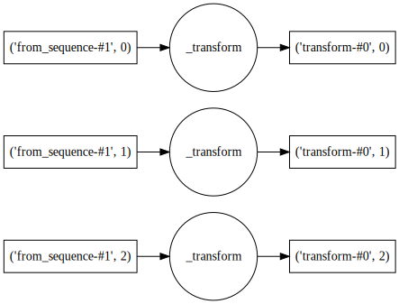
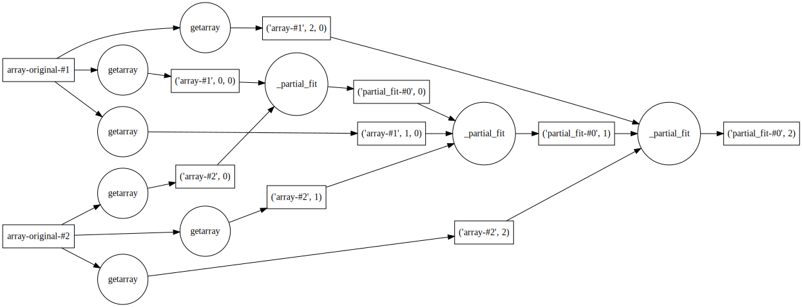
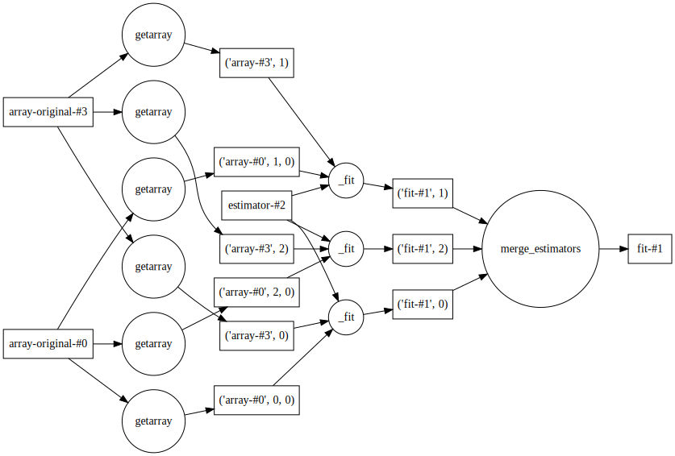
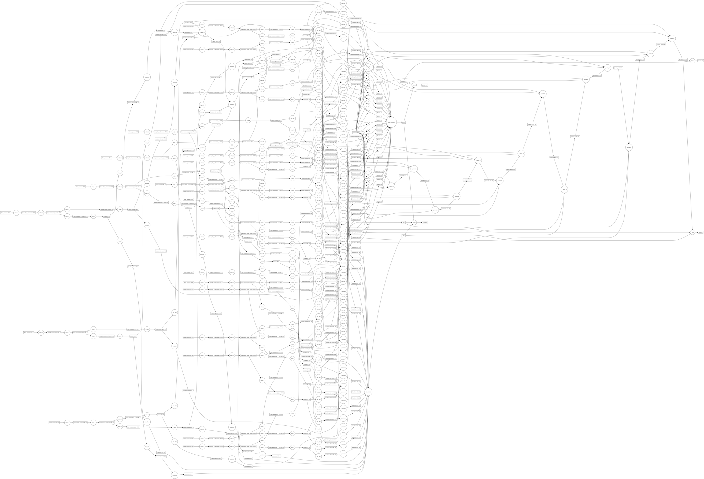

Tue 19 July 2016 — under dask
This is part 2 of a series of posts discussing recent work with dask and scikit-learn. In the last post we discussed model-parallelism — fitting several models across the same data. In this post we'll look into simple patterns for data-parallelism, which will allow fitting a single model on larger datasets.
Scikit-learn contains several tools for working with large datasets. The best way to learn about them is to check out the excellent documentation. In short, scikit-learn's approach needs three things:
HashingVectorizer and FeatureHasher)partial_fit)Applied together these allow scikit-learn to do out-of-core learning (working with data that doesn't fit in RAM). This works well in practice, but does present a few issues:
Incremental learning is an inherently serial operation — the samples are streamed through the estimator updating the coefficients incrementally. Often some of the preprocessing/feature-extraction steps can be parallelized, something scikit-learn doesn't make easy to do.
There's a disconnect between in memory estimators, which can be used with
GridSearchCV, and incrememental estimators which can't. If you want to
optimize hyperparameters when using partial_fit you currently have to
implement that part yourself.
There are other methods of dealing with larger datasets. One common method is model averaging, where the same model is fit on many partitions, and the resulting coefficients are averaged together at the end. This is presented in a few scikit-learn presentations, but not implemented in a builtin way anywhere (yet).
To demonstrate dask-learn's approach to solving these issues, we'll reproduce this text classification example from the scikit-learn docs.
dask-learnThis example uses the Reuters-21578 collection, as taken from the UCI ML repository. This is a collection of documents taken from the Reuters newswire in 1987. Each document is labeled with a category describing its content (e.g. "acq").
Following the scikit-learn example, we'll copy-paste in their subclass of
HTMLParser. This is used for parsing the the .sgm files and yielding them
one at a time.
import re
from sklearn.externals.six.moves import html_parser
from sklearn.externals.six.moves import urllib
class ReutersParser(html_parser.HTMLParser):
"""Utility class to parse a SGML file and yield documents one at a time."""
def __init__(self, encoding='latin-1'):
html_parser.HTMLParser.__init__(self)
self._reset()
self.encoding = encoding
def handle_starttag(self, tag, attrs):
method = 'start_' + tag
getattr(self, method, lambda x: None)(attrs)
def handle_endtag(self, tag):
method = 'end_' + tag
getattr(self, method, lambda: None)()
def _reset(self):
self.in_title = 0
self.in_body = 0
self.in_topics = 0
self.in_topic_d = 0
self.title = ""
self.body = ""
self.topics = []
self.topic_d = ""
def parse(self, fd):
self.docs = []
for chunk in fd:
self.feed(chunk.decode(self.encoding))
for doc in self.docs:
yield doc
self.docs = []
self.close()
def handle_data(self, data):
if self.in_body:
self.body += data
elif self.in_title:
self.title += data
elif self.in_topic_d:
self.topic_d += data
def start_reuters(self, attributes):
pass
def end_reuters(self):
self.body = re.sub(r'\s+', r' ', self.body)
self.docs.append({'title': self.title,
'body': self.body,
'topics': self.topics})
self._reset()
def start_title(self, attributes):
self.in_title = 1
def end_title(self):
self.in_title = 0
def start_body(self, attributes):
self.in_body = 1
def end_body(self):
self.in_body = 0
def start_topics(self, attributes):
self.in_topics = 1
def end_topics(self):
self.in_topics = 0
def start_d(self, attributes):
self.in_topic_d = 1
def end_d(self):
self.in_topic_d = 0
self.topics.append(self.topic_d)
self.topic_d = ""
Using that parser, we can create a few preprocessing functions for extracting
features and targets. We'll then apply these functions to each file/document
using the dask.bag interface. At
the end of this process we'll have a dask.bag.Bag containing the title and
body of each document as text — this will be our feature matrix. We'll
also have a dklearn.matrix.Matrix of booleans indicating whether the document
is labeled with the "acq" topic — this will be our target matrix. We'll
then learn a binary classification problem to determine from the document text
whether the document is in the "acq" class.
import os
from glob import glob
import numpy as np
import dask.bag as db
import dklearn.matrix as dm
def file_to_documents(filename):
"""Given a filename, yield documents"""
for doc in ReutersParser().parse(open(filename, 'rb')):
yield doc
def remove_empty_topics(docs):
"""Remove all docs that don't have a topic"""
return [doc for doc in docs if doc['topics']]
def documents_to_X_text(docs):
"""Extract the text to use as features"""
return [u'{title}\n\n{body}'.format(**doc) for doc in docs]
def documents_to_y(docs, pos_class='acq'):
"""Create an array indicating whether ``pos_class`` is in the
topics for each document."""
return np.array([pos_class in doc['topics'] for doc in docs], dtype='i1')
files = glob(os.path.join("reuters", "*.sgm"))
docs = (db.from_sequence(files)
.map(file_to_documents)
.map(remove_empty_topics))
X_text = docs.map(documents_to_X_text).concat()
y = dm.from_bag(docs.map(documents_to_y), dtype='i1')
To validate our fit estimators, we'll need to hold back a sample of data to use
for testing. To do that, we can use the train_test_split function, which
mirrors the scikit-learn function of the same
name.
We'll hold back 20% of the data to use as a test set.
from dklearn.cross_validation import train_test_split
X_train, X_test, y_train, y_test = train_test_split(X_text, y, test_size=0.2)
We can't train directly on the text data, we first need to extract it out into a matrix of features. Continuing to mirror the scikit-learn example, we'll use a HashingVectorizer. This is a stateless transformer that maps tokens to integers using a hash function, and results in a sparse matrix of occurrence counts for each token. Since it's stateless it works well with out-of-core or streaming data, and the transform can be trivially mapped across all partitions. As a dask graph, this looks something like:

To do this mapping automatically, we've implemented a simple wrapper in dask-learn.
from dklearn.feature_extraction import HashingVectorizer
vectorizer = HashingVectorizer(decode_error='ignore',
n_features=2**18,
non_negative=True)
Dask-learn contains several parallelization patterns for wrapping scikit-learn
estimators. Here we'll create a Pipeline for each pattern, which we will
later fit.
Chained is for use with estimators that implement the partial_fit method,
and implements "partial_fit chaining". When the Chained.fit method is
called, a graph is created that calls partial_fit iteratively on each chunk.
As a dask graph, this looks something like:

We'll create a Pipeline that first transforms the input using the
HashingVectorizer created above, and then follows it with a SGDClassifier
wrapped with Chained.
from dklearn import Chained, Pipeline
from sklearn.linear_model import SGDClassifier
pipe1 = Pipeline([('vect', vectorizer),
('sgd', Chained(SGDClassifier()))])
pipe1
Pipeline(steps=[('vect', HashingVectorizer(analyzer=u'word', binary=False, decode_error='ignore',
dtype=<type 'numpy.float64'>, encoding=u'utf-8', input=u'content',
lowercase=True, n_features=262144, ngram_range=(1, 1),
non_negative=True, norm=u'l2', preprocessor=None, stop_words=N...2', power_t=0.5,
random_state=None, shuffle=True,verbose=0,
warm_start=False)))])
Averaged fits the same estimator on each chunk in parallel, and then averages
the coefficients together at the end. This is a simple way to deal with larger
data, and is discussed in more detail in this notebook from Olivier
Grisel.
As a dask graph, this looks something like:

We'll create a Pipeline as before, but this time fitting a
LogisticRegression wrapped with Averaged.
from dklearn import Averaged
from sklearn.linear_model import LogisticRegression
pipe2 = Pipeline([('vect', vectorizer),
('logistic', Averaged(LogisticRegression()))])
pipe2
Pipeline(steps=[('vect', HashingVectorizer(analyzer=u'word', binary=False, decode_error='ignore',
dtype=<type 'numpy.float64'>, encoding=u'utf-8', input=u'content',
lowercase=True, n_features=262144, ngram_range=(1, 1),
non_negative=True, norm=u'l2', preprocessor=None, stop_words=N...ty='l2', random_state=None,
solver='liblinear', tol=0.0001,verbose=0, warm_start=False)))])
It should be noted that the estimators from dask-learn created above
(Chained, Averaged, Pipeline, etc...) are actual scikit-learn estimators,
all deriving from the same sklearn.base.BaseEstimator class. They implement
many of the common scikit-learn methods, work with sklearn.clone, and repr
the same. However, all operations on them are lazy and pure. This means two
things:
Methods such as fit and set_params return a new estimator rather than
mutating the estimator in place. This means that you need to do fit_est =
est.fit(X, y) instead of est.fit(X, y).
With a few exceptions (get_params, and __getattr__), all operations on
the estimators are done lazily, building a dask graph behind the scenes. This
means that to actually perform the fit/predict/score/etc... you need to call
the compute method. This matches the same interface as the main dask
collections (array, bag, dataframe, etc...).
These design decisions were made to make the code easier to reason about — trying to determine the result of lazy-mutable operations proved to be quite tricky. A benefit of the laziness is that multiple estimators can be fit at the same time sharing intermediates (as show in the previous post).
Here we'll fit and score both estimators. Remember this is all done lazily, so
no actual work will be done until we call compute.
fit1 = pipe1.fit(X_train, y_train, sgd__classes=[0, 1])
score1 = fit1.score(X_test, y_test)
fit2 = pipe2.fit(X_train, y_train)
score2 = fit2.score(X_test, y_test)
Note that the chained pipeline received a classes keyword to fit. This is
because partial_fit requires the keyword on the first call. If it wasn't
provided, the classes would be determined automatically, but this is less
efficient. The Averaged estimator doesn't have this restriction.
To do the actual fitting, we'll pass both the fit estimators and scores to
dask.compute. This will merge all the graphs together, allowing intermediates
to be shared. This entire graph contains:
Averaged and Chained)
We'll also use the profiling functionality provided in dask.diagnostics to measure performance.
from dask.diagnostics import ResourceProfiler, Profiler, ProgressBar, visualize
from dask.multiprocessing import get as mp_get
from dask import compute
with ResourceProfiler(0.5) as rprof, Profiler() as prof, ProgressBar():
fit1, fit2, score1, score2 = compute(fit1, fit2, score1, score2,
get=mp_get, num_workers=4)
[########################################] | 100% Completed | 7.8s
score1
0.96392016376663259 # The score for the Chained(SGDClassifier())
score2
0.87871033776867968 # The score for the Averaged(LogisticRegression())
From these scores, it seems that the Chained(SGDClassifier()) pipeline
performs better for this text classification problem. Now let's look at the
profile plot:
visualize([prof, rprof])
Looking at the above profiling plot, we can observe a few things:
I'm able to achieve between 400 - 800% cpu usage. My machine has 4 real cores (8 virtual cores) so this is pretty optimal. Since we're only using 4 processes, the spikes to 800% are due to internal threading in certain scikit-learn operations.
The dark blue rectangles are the disk reads and initial preprocessing steps. These are by far the most expensive parts of the computation. The overall profiling plot shows a nice structure of alternating reads and computations, which matches our expectations of streaming the data through memory.
The parallelization patterns are intuitive to use, and work with any estimator that matches the assumptions made. This means we don't need to create a new class for each scikit-learn estimator (there are a lot of them!).
Because each estimator is lazy, we can fit several different estimators on the same data, but reuse intermediates results from each. This is more efficient.
Since the wrapper classes implement the common fit, predict, score
interface, they can be dropped into things like GridSearchCV, and
everything should just work. This means we can do grid search and cross
validation on out-of-core datasets (something we'll look at more in depth in
the next post).
It's not clear that averaging coefficients is the best way for most estimators. In particular, I'm not sure what the behavior should be when all classes aren't present in all partitions.
The approaches here are naive. This isn't necessarily a bad thing as it makes the library very easy to maintain. However, there are almost certainly more efficient/correct methods that could be used.
I am not a machine learning expert. Is any of this useful? Do you have suggestions for improvements (or better yet PRs for improvements :))? Please feel free to reach out in the comments below, or on github.
This work is supported by Continuum Analytics and the XDATA program as part of the Blaze Project.
All content copyright 2014-2016 Jim Crist unless otherwise noted. Licensed under Creative Commons.
Find me on Twitter, GitHub, Speaker Deck, or shoot me an email.